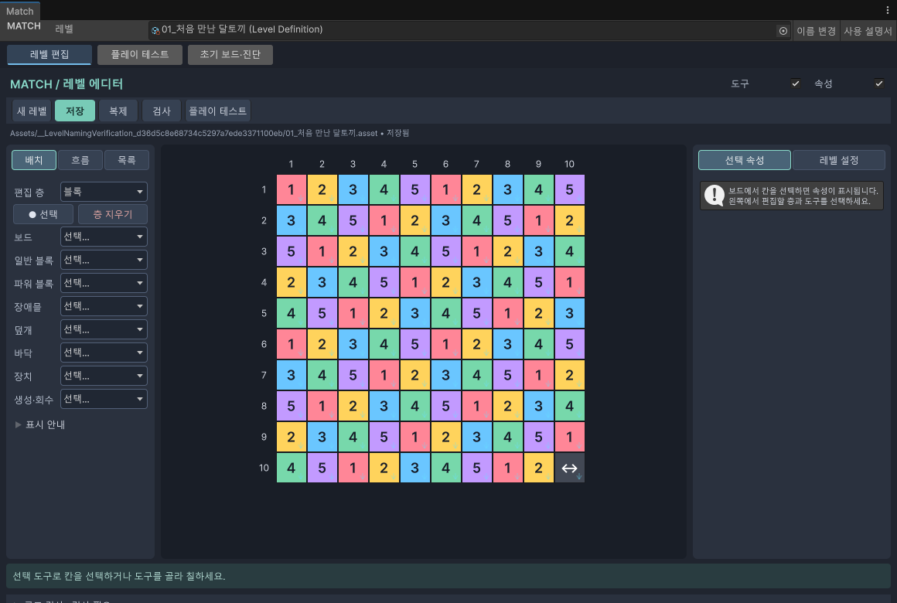

추가 · 현재 씬 기반 레벨툴
레벨툴 시작하기
프로젝트를 열고, 블록을 놓고, 저장한 뒤 다른 기기로 옮기기까지 따라 해 보세요.
기준2026.10.15 현재 UI · Windows / Android 레벨툴
처음이라면 이 순서로
- 새 프로젝트를 만듭니다. 프로젝트는 여러 레벨을 담는 작업 상자입니다. 받은 ZIP이 있다면 가져오기부터 시작하세요.
- 레벨을 선택하고 블록을 놓습니다. 휴대폰은 소재 선택 → 보드 탭 순서입니다.
- 저장을 누르고 제목 아래 저장됨을 확인합니다.
- 게임 시험 입력을 현재 편집본 JSON으로 정하고 시험합니다.
- 다른 기기로 옮길 때는 프로젝트 ZIP 내보내기를 사용합니다.

필요한 설명 바로 찾기
세 가지 이름만 기억하세요
- JSON: 레벨과 설정을 글 형태로 기록한 작업 데이터입니다. 파일을 직접 수정할 필요는 없습니다.
- 프로젝트 ZIP: 정상 저장된 공개 JSON 문서를 묶은 전달 파일입니다. 앱이나 이미지 파일 전체를 담는 파일은 아닙니다.
- MemoryPack: 게임용으로 따로 변환한 데이터입니다. 처음 편집할 때는 현재 편집본 JSON을 선택하세요.
현재 안내와 이전 안내 구분
이전: Unity의 Match 통합 작업창을 먼저 열고 레벨 에셋을 저장하는 안내 → 현재: 레벨툴 씬 또는 레벨툴 앱에서 JSON 프로젝트를 편집합니다.
이전 편집창의 세부 규칙·튜토리얼 설명은 보존했습니다. 메뉴 위치·저장·전달·터치는 위의 현재 안내를 우선하세요.
이전 설명 보관
이전 Unity 편집창 안내·기존 변경 이력 펼치기 (현재 절차 아님)
처음 사용하는 분께
시작하기
레벨을 만들고, 직접 플레이하며, 잘못된 설정을 찾아보세요.
시작 전에 프로젝트를 Unity에서 연 뒤 시작합니다.
처음이라면 이 순서로
창 열기
Unity 위쪽 메뉴에서 Match → 통합 작업창을 누릅니다. 이미 열려 있으면 같은 창을 보여줍니다.
Match → 레벨 에디터 / 플레이 테스트 / 초기 보드 확인도 각각 같은 창의 해당 화면을 엽니다. Match → 사용 설명서는 이 설명서를 엽니다.
| 탭 | 하는 일 |
|---|---|
| 레벨 편집 | 블록을 놓고 레벨 조건을 정합니다. |
| 플레이 테스트 | 만든 레벨을 직접 플레이합니다. |
| 초기 보드·진단 (시험 메뉴) | 처음 배치되는 모습과 처리 과정을 자세히 확인합니다. |
| 결과·이력 (추가) | 전략별 통계, 사례 재생, 이력 비교와 기록 보관을 확인합니다. |
화면의 큰 구성

| 위치 | 설명 |
|---|---|
| 맨 위 | 카테고리 메뉴, 현재 레벨 선택, 자주 쓰는 화면 탭 |
| 왼쪽 | 배치할 도구 선택. 배치 / 흐름 / 목록으로 나뉩니다. |
| 가운데 | |
| 오른쪽 | 선택한 칸의 설정 또는 레벨 전체 설정 |
| 아래 | 작업 안내와 구조 검사 결과 |
탭을 바꾸면 어떻게 되나요?
추가 · 창 크기 자동 조정: 선택한 탭에 필요한 크기보다 창이 작으면 부족한 가로·세로만 자동으로 늘립니다. 이미 넓혀 둔 창은 줄이지 않습니다. 최소 크기는 레벨 편집 1040 × 780 → 1040 × 808, 플레이 테스트 760 × 860 → 760 × 888, 초기 보드·진단 800 × 900 → 800 × 928입니다. 추가된 결과·이력 탭은 1000 × 760 → 1000 × 788을 기준으로 합니다. Unity 안에 도킹해서 이 크기를 확보할 수 없으면 바깥 스크롤로 가려진 영역을 확인할 수 있습니다. 자세한 목록은 각 영역 안에서 스크롤합니다.
탭을 바꾸어도 선택한 칸, 스크롤 위치, 테스트 진행 상태는 유지됩니다. 떠난 테스트의 자동 처리는 잠시 멈추고, 돌아오면 이어집니다.
다만 원본 레벨을 고치거나 다른 레벨을 선택하면 예전 테스트는 다시 시작해야 합니다. 창을 닫거나 Unity가 스크립트를 다시 읽었을 때도 테스트를 새로 시작합니다.
맵 모양 목록과 ! 도움말
이전: 맵 모양 추천으로 시작 → 현재: 레벨을 저장한 뒤 맵 모양 목록 → 현재 레벨 모양 등록으로 보관합니다. 목록에서 선택하고 확정할 때 새 레벨을 만듭니다. 사용 순서 보기
! 아이콘은 마우스 오버로 설명, 클릭으로 관련 문서 이동입니다.
필요한 설명 바로 찾기
추가 · 여러 번 자동으로 시험하기: 횟수 지정, 일시정지·재개·중지, 완료 기록 보존과 같은 조건 재시험을 안내합니다.
변경 · 기본·계획 봇 시험: 한 수·한 판 실행, 같은 조건 비교, 중지와 가정 이유를 확인합니다.
추가 · 튜토리얼 따라하기
처음 만든다면 시작하기 · 연습 창 열기부터 읽으세요. 실제 화면과 클릭 순서로 설명합니다.
2026-10-08 · Windows / Unity 6000.3.10f1. 대표 예제 논리 재생과 실제 편집기 화면 확인. 실기기 입력 검사는 별도입니다.
이전 안내와 달라진 점
처음 만드는 순서와 조건 안내 → 공통 구성·레벨별 값·내 샘플 → 현재: 시작·3매칭·파워·장애물·재사용 페이지에서 단계별 사진과 입력값을 확인할 수 있습니다.
변경 이력
2026-10-08 · 추가 · 튜토리얼 메뉴 · 일반 매뉴얼의 공통 목차에 튜토리얼 진입 항목을 추가하여 다른 안내를 읽은 뒤에도 돌아갈 수 있게 했습니다. Windows / Chrome · 메뉴 왕복 이동 확인.
2026-10-08 · 튜토리얼 따라하기 · 기본 안내 링크 → 대표 예제 3개와 실제 화면·저장 절차 추가. 처음 작성하는 사람을 위한 상세 설명 요청 반영.
2026-10-08 · 튜토리얼 제작 안내 · 추가 · 공유 흐름과 레벨별 설정 제작 UX 반영.
2026.10.01 · 보드 규격 · 10×10 → 9×9(81칸) · 사용자 승인에 따른 규격 변경. 대상: Windows / Unity 6000.3.10f1. 이번 변경의 실제 화면 검증은 미확인.
2026.09.29 | 실제 메뉴 펼침 화면 | 추가 | 33단계 메뉴 표시 검수
2026.09.29 | 상단 메뉴와 화면 탭 | 흩어진 버튼 → 카테고리 메뉴와 자주 쓰는 탭 | 작업별 구분 개선
| 변경일 | 변경 항목 | 이전 → 현재 | 이유 |
|---|---|---|---|
| 2026.09.29 | 전체 작업 순서 | 추가 · 편집→수동→반복 시험→결과 안내 | 30단계 통합 검수 진행 내용 |
| 2026.09.29 | 예상 난이도 확인 완료 | 추가 · 실제 800판·추천 UI·영향 회귀 완료 | 445개 검사 통과. 인간 체감·브라우저 배치는 미검증 |
| 2026.09.29 | 예상 난이도 | 추가 · 등급·판단 보류·근거 안내 연결 | 29단계 구현 반영. 대표 레벨 검증 진행 중 |
| 2026.09.29 | 결과와 이력 | 추가 · 통계·사례 재생·비교·보관 안내 연결 | 28단계 사용법 추가, 완료 감사 진행 중 |
| 2026.09.28 | 반복 시험 안내 | 추가 · 반복 실행과 실행 제어 사용법 | 27단계 실제 UI·재로드 확인 |
| 2026.09.28 | 계획 전략 안내 | 기본 봇 안내 → 기본·계획 선택과 같은 조건 비교 안내 | 26단계 기능 반영 |
| 2026.09.28 | 기본 봇 시험 | 추가 · 사용법 바로가기 | 25단계 기능 안내 |
| 2026.09.28 | 탭별 창 크기와 도움말 | 추가 · 최소 크기 자동 확대, 도움말 영역 확보 | 탭마다 수동으로 창을 늘리는 불편과 아이콘 겹침 개선 |
| 2026.09.28 | 모양 목록 | 추천 → 등록형 목록 안내 추가 | 사용자 등록 방식 반영 |
| 2026.09.28 | 맵 모양 추천 안내 | 추가 · 왼쪽 목차에 추천 안내 연결 | 추천과 ! 도움말 사용법 안내 |
| 2026.09.28 | 이 페이지 전체 | 추가 · 처음 작성 | 현재 Match 도구를 쉽게 설명 |
설명 편집일: 2026.09.28 · 대상: Windows / Unity 6000.3.10f1
검증 상태: 메뉴·절차 코드 대조, 실제 화면 캡처. 확인 범위 보기
추가 · 시험 기록 관리
시험 결과가 쌓였다면 지난 여러 레벨 시험 선택으로 다시 확인하고, 필요한 기록을 따로 보관한 뒤 시험 기록 전체 삭제로 정리하세요.
2026.09.29 변경 이력: 세 종류 로컬 기록 정리와 지난 실행 선택 안내 추가. 저장·실제 UI 검증 완료. 기존 통합창의 조회·실행·기록 관리 영역으로 구분하며 브라우저 배치는 후속 확인 대상입니다.
변경 이력
| 변경일 | 변경 항목 | 이전 → 현재 | 이유 |
|---|---|---|---|
| 2026.10.15 | 현재 씬 레벨툴 안내 | 추가 · JSON·ZIP·터치 조작과 현재 화면 안내 | 현재 UI에 맞춘 초보자 설명 요청 |
설명 편집·화면 확인: 2026.10.15 · ServeredMeridian / Windows / Unity 6000.3.10f1.
Windows 씬 UI 캡처, 별도 연습 프로젝트 JSON 저장·재로드, 공통 ZIP 처리 왕복 문서 일치 확인. 모바일은 에디터에서 같은 UI를 모바일 배치로 표시했습니다. Android 실기기 터치·키보드·시스템 파일 선택과 Windows 시스템 파일 선택기 실제 조작은 이번 작업에서 확인하지 않았습니다. 브라우저 도구의 로컬 파일 접근 제한으로 넓은 화면·좁은 화면의 HTML 렌더링은 미검수입니다.